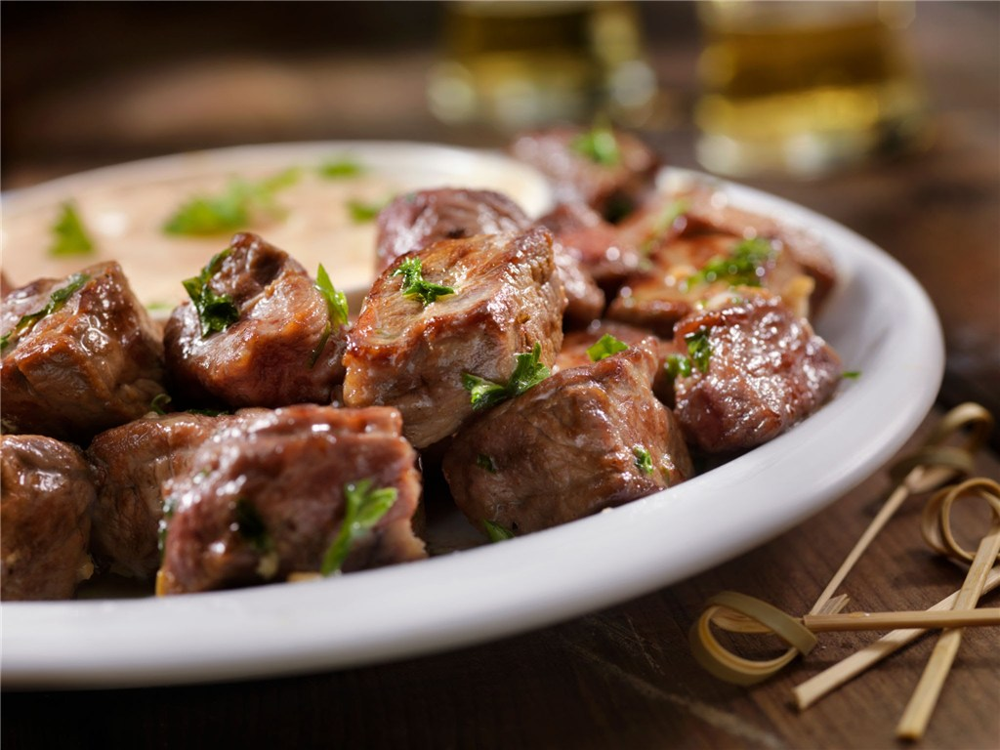

Garlic Butter Steak Nuggets
These bite-sized steak nuggets are perfect for a high-end appetizer menu or a modern "comfort food" website concept. They feature tender cubes of beef with a seasoned, crunchy exterior, finished with a toss in garlic herb butter.

Photo: Google AI
Traditions & Serving Suggestions
This savory recipe for Garlic Butter Steak Nuggets is the ultimate "low effort, high reward" dish, making it a perfect centerpiece for a modern food blog or a high-end pub menu project. By using high-heat searing techniques usually reserved for whole steaks, these bite-sized morsels achieve a deeply caramelized crust while maintaining a tender, juicy center. The finishing baste of frothing garlic butter and fresh parsley elevates the beef from a simple snack to a gourmet appetizer that bridges the gap between casual comfort food and steakhouse elegance.
Pairing Idea:
- Mashed Potatoes
- Steamed White Rice
- French Fries
- Side Salad
Origins & History
Garlic Butter Steak Nuggets are 10-minute, high-heat seared steak cubes tossed in a rich, buttery garlic sauce. Often made with sirloin or ribeye, they are, at their core, a 3-ingredient dish (steak, butter, garlic). For the best results, dry the steak, use a scorching hot cast-iron skillet, and avoid overcooking for a crispy exterior and tender center.
- Prep Time
- Cook Time
- Yield
- 4 servings
Ingredients
The Nuggets
- 1 lb (450g)
- Sirloin or Ribeye Steak, cut into 1-inch cubes
- 1 tsp
- Kosher Salt
- 1/2 tsp
- Black Pepper
- 1/2 tsp
- Garlic Powder
- 1/2 tsp
- Smoked Paprika
- 2 tbsp
- All-Purpose Flour (optional, for extra crisp)
- 2 tbsp
- Olive Oil
- 3 tbsp
- Unsalted Butter
- 4 cloves
- Garlic, minced
- 1 tbsp
- Fresh Parsley, chopped
Dipping Sauce (Optional)
- 1/4 cup
- Mayonnaise
- 1 tbsp
- Horseradish
- 1 tsp
- Dijon Mustard
Instructions
- Prepare the Steak: Pat the steak cubes completely dry with paper towels. In a bowl, toss the steak with salt, pepper, garlic powder, paprika, and flour until lightly coated.
- Sear the Nuggets: Heat olive oil in a large cast-iron skillet over high heat until smoking. Add the steak cubes in a single layer (do not overcrowd the pan; cook in batches if necessary). Sear for 2-3 minutes without moving them to form a crust.
- Baste: Turn the nuggets over. Reduce heat to medium, add butter and minced garlic to the pan. Cook for another 1-2 minutes, basting the steak with the melted garlic butter until cooked to desired doneness.
- Finish: Remove from heat, garnish with fresh parsley, and serve immediately.